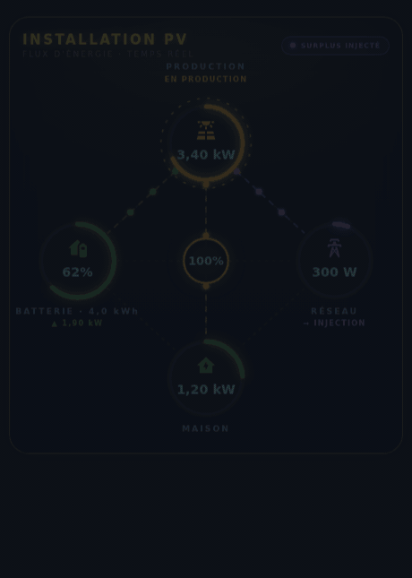
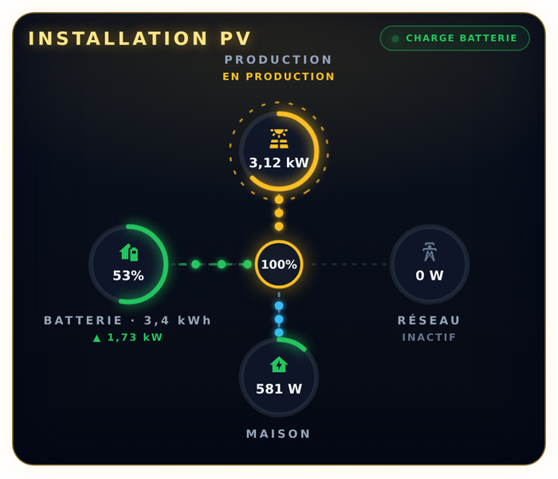
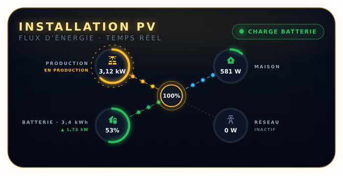
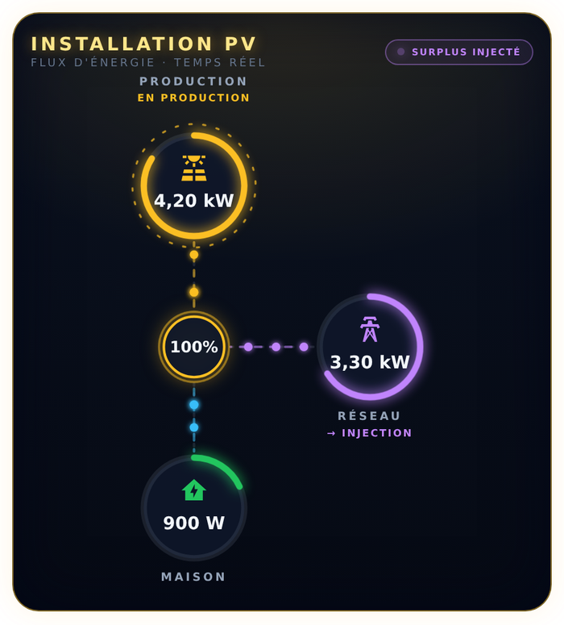
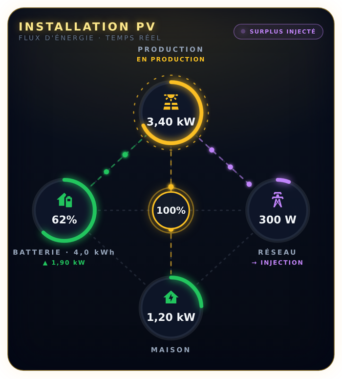
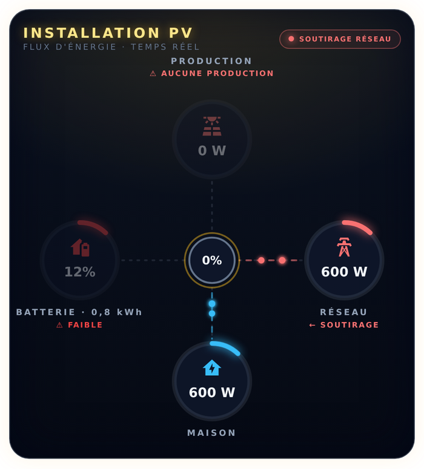
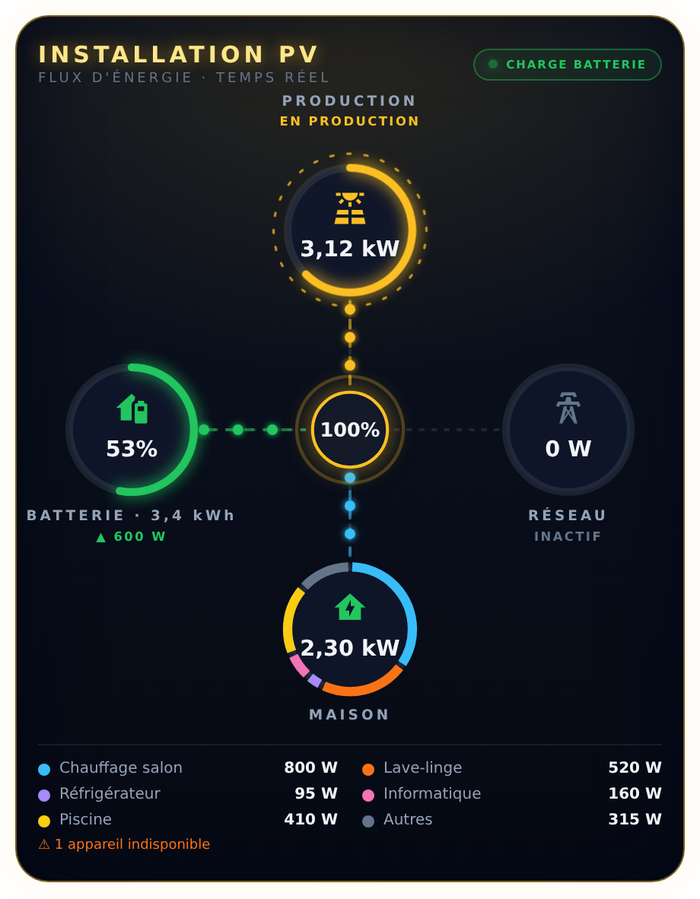
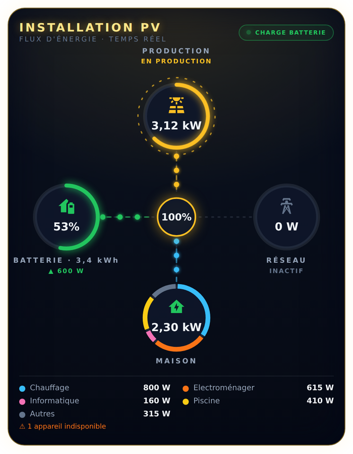

Solar Powerflow Card
Une carte Lovelace qui montre en direct où va l'énergie de votre installation solaire : production, batterie, réseau et maison. Les points qui circulent indiquent le sens du flux, et leur vitesse suit la puissance.
Ce que la carte affiche
- Production : la puissance est écrite en jaune dans le cercle, et « EN PRODUCTION » ou « AU REPOS » sous le titre.
- Batterie : niveau de charge dans le cercle ; sous le titre, puissance de charge (▲) ou de décharge (▼), et énergie stockée en kWh.
- Réseau : puissance dans le cercle ; sous le titre, injection (violet) ou soutirage (rouge).
- Maison : consommation instantanée. Elle passe au vert quand le solaire la couvre entièrement.
- Cercle central : pourcentage d'autonomie, c'est-à-dire la part de la consommation qui ne vient pas du réseau.
- Badge en haut à droite : état courant. Il change selon le cas ci-dessous.
| Badge | Condition |
|---|---|
| SURPLUS INJECTÉ | Production > 10 W et injection > 10 W |
| CHARGE BATTERIE | Production > 10 W et batterie en charge |
| AUTOCONSOMMATION | Production > 10 W, tout part dans la maison |
| SUR BATTERIE | Pas de production, batterie en décharge |
| SOUTIRAGE RÉSEAU | Pas de production, ni batterie, la maison tire sur le réseau |
| VEILLE | Aucun flux |
Trois situations
Exemples de configuration
Configuration complète :
type: custom:solar-powerflow-card title: INSTALLATION PV pv_entity: sensor.production_solaire load_entity: sensor.consommation_maison soc_entity: sensor.batterie_niveau battery_charge_entity: sensor.batterie_charge battery_discharge_entity: sensor.batterie_decharge grid_export_entity: sensor.reseau_injection grid_import_entity: sensor.reseau_soutirage max_power: 5000 battery_capacity: 6.5
Installation sans batterie : laissez simplement les entités de batterie vides, et mettez battery_capacity: 0 pour masquer les kWh.
type: custom:solar-powerflow-card title: MA TOITURE pv_entity: sensor.production_solaire load_entity: sensor.consommation_maison grid_export_entity: sensor.injection_reseau grid_import_entity: sensor.soutirage_reseau max_power: 5000 battery_capacity: 0
Le même exemple dans une colonne verticale du tableau de bord :
type: vertical-stack
cards:
- type: custom:solar-powerflow-card
pv_entity: sensor.production_solaire
load_entity: sensor.consommation_maison
Options d'affichage
Toutes les options ci-dessous sont désactivées par défaut : la carte ne change que si vous les activez, dans l'éditeur visuel ou en YAML.




show_grid: false) : le cercle est retiré, le reste est recentré.

type: custom:solar-powerflow-card pv_entity: sensor.production_solaire load_entity: sensor.consommation_maison soc_entity: sensor.batterie_niveau battery_charge_entity: sensor.batterie_charge battery_discharge_entity: sensor.batterie_decharge grid_export_entity: sensor.reseau_injection grid_import_entity: sensor.reseau_soutirage layout: compact direct_flows: true alert_battery_low: true battery_low_threshold: 20 alert_no_production: true
| Alerte | Condition |
|---|---|
| Batterie pleine | Niveau ≥ battery_full_threshold (99 % par défaut) |
| Batterie faible | Niveau ≤ battery_low_threshold (15 % par défaut) |
| Aucune production | Production ≤ 10 W alors que sun.sun (ou sun_entity) indique le soleil levé à plus de 10° au-dessus de l'horizon |
Détail de la consommation
Option consumption_breakdown: ring : l'anneau du cercle Maison se découpe en segments colorés, un par appareil, avec une légende. Ce qui n'est pas mesuré apparaît dans « Autres » (consommation de la maison moins les appareils affichés).


group_devices: true : les appareils d'un même groupe sont additionnés.consumption_breakdown: ring
breakdown_max: 5
devices:
- entity: sensor.prise_frigo_puissance
name: Réfrigérateur
- entity: sensor.radiateur_salon_puissance
name: Radiateur salon
group: Chauffage
- Ajoutez des capteurs de puissance indépendants (pas de double comptage).
- Seuls les plus gros consommateurs du moment sont détaillés (
breakdown_max) ; leur couleur reste fixe. - Le cercle est toujours plein : il montre la répartition, le chiffre au centre donne le niveau.
Réglages
| Option | Rôle |
|---|---|
max_power | Puissance (5000 W par défaut) qui remplit un cercle à 100 % et donne la vitesse maximale des animations. |
battery_capacity | Capacité de la batterie en kWh, pour calculer l'énergie stockée. |
| Capteurs en kW | Convertis automatiquement en W. |
| Clic sur un cercle | Ouvre la fiche de l'entité correspondante. |
Pour l'installation pas à pas, voir LISEZMOI.md.